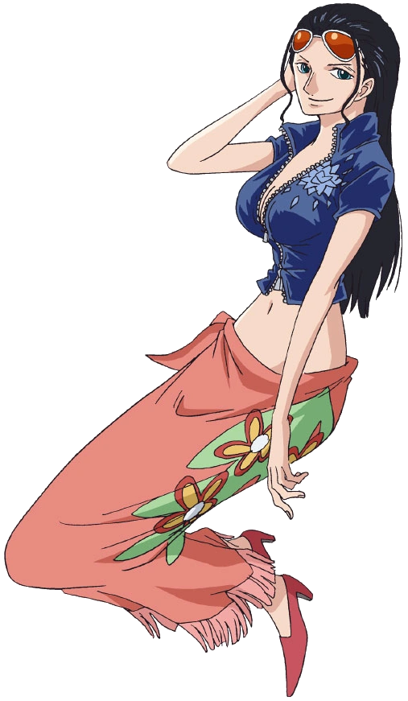

Role: Archaeologist
Devil Fruit: Hana Hana no Mi
Bounty: 930,000,000 Berries
Description: An archaeologist seeking the Rio Poneglyph. She is the only living person capable of reading Poneglyphs.

Her bounty updated after defeating Black Maria in Wano.